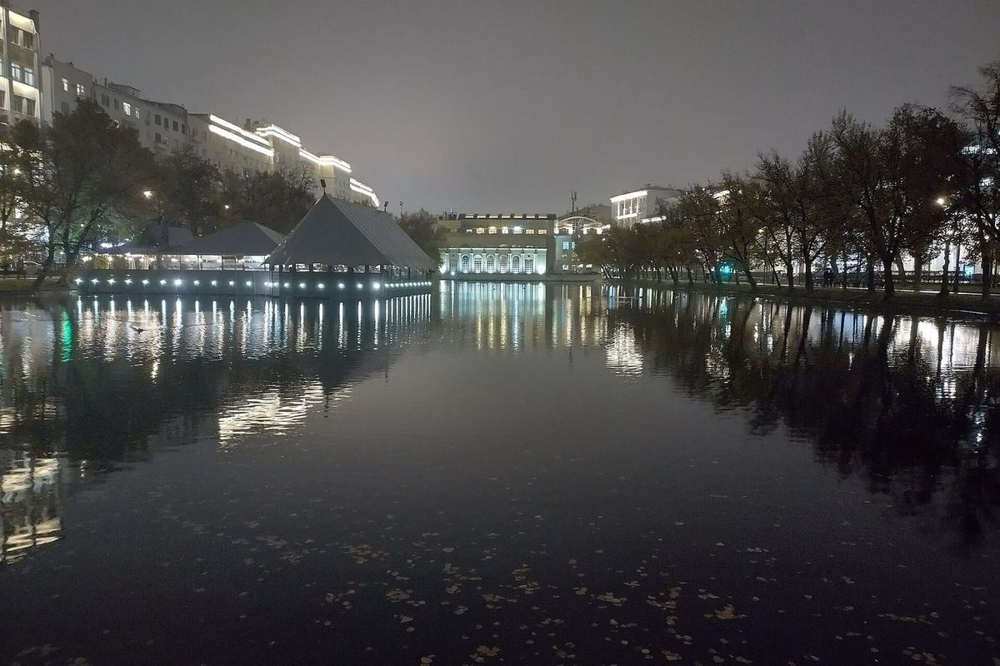

День 03 · воскресенье, 8 ноября
Свадьба, которая не наша
Воскресенье у нас длинное: город днём, театр вечером, ужин у Славянской площади.

Фото: Vasilii Martynov, CC BY-SA 4.0
- Гостиница
- Сафмар Аврора Люкс
- Чистые пруды — начинаем с воды, фонарей и первого кофе
- Покровка и Ивановская горка: тихие переулки, куда почти не доходят туристы
- Заезжаем в отель переодеться — и снова в центр, к театру
Вечер
«Шикарная свадьба» — Театр Ярославы Славской, Малый Харитоньевский, 10
Ужин — Рыба моя на Славянской площади
Про день
- Чистые пруды в ноябре — это очень московская Москва: фонари, вода, отражения в мокром асфальте. Фотографию поставил такую же — вечернюю.
- После спектакля не садимся в такси: до Рыба моя полторы тысячи шагов и полчаса пешком вечерним центром.
Про ужин
- Рыба моя — про рыбу и морепродукты: тартары, запекание в соли, серьёзная винная карта. Столик бронирую заранее и не рассказываю заранее.
ℹ️ Театр
Малый Харитоньевский переулок, 10, стр. 2. Метро Тургеневская, Чистые пруды или Красные Ворота. Начало в 19:00.